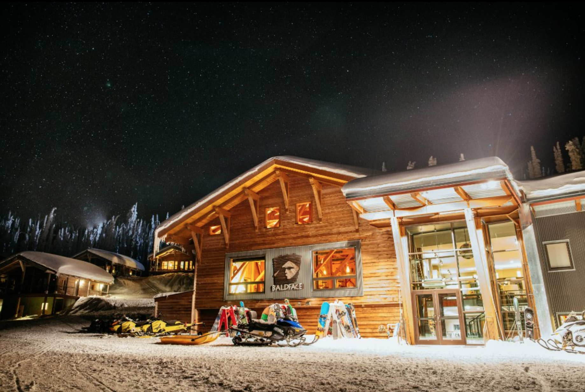

and
Images and text by: https://blog.heli.life/ski-ride/our-top-cat-skiing-destinations-in-british-columbia-and-canada/Baldface Valhalla, Nelson BC
Baldface Lodge is nestled in the sub-alpine region of the Selkirk Mountains at an elevation of 6,700 feet where guests experience a range of different riding during their stay. Their 32,000 acres of terrain includes open bowls, sustained steep forests, “God-gladed” mid-alpine tree sections, and natural terrain features like log drops and mini-pipe gullies.
Big Red Cat Skiing in Rossland, BC

Located in Rossland, BC, has terrain that spans over 8 peaks and 20,000 acres of terrain, packed with perfect glades and some of the best tree skiing in the world. They are nearby resorts including RED Mountain, on the famous Powder Highway.

Big Red Cat Skiing offers both single-day and multi-day options. They can also help coordinate lodging at Red Mountain Resort or in town. Something that sets them apart is that they have created different packages based on ability level. This helps them match skiers and riders with other guests at a similar ability level. This way, advanced skiers can get more laps in and keep the pace high, while beginners have the ability to take their time without feeling rushed. They also allow teens aged 12 and up to ski, as long as they are accompanied by a parent or guardian, making them a great option for families.
Great Northern Snowcat Skiing in Trout Lake, BC

Great Northern Snowcat skiing opened its doors way back in 1979, meaning they’ve got years of experience making sure people have a great time. They operate in the Selkirk Mountain wilderness, and they have set scheduled dates in their 7-day, 4-day, and 3-day packages. Selkirk powder is legendary, known for being lighter than you would find on the West Coast. Their packages include everything; meals, skiing, snacks, fresh powder turns, and lodging. The lodge includes 18 cozy rooms, each with its own private bathroom, right in the heart of the action. Wake up well-rested and ready to go.

Choosing Great Northern Snowcats is the perfect way to escape the crowds. If you’re looking for that bucket list trip, this crew can fulfill it. They are typically fully booked before the season starts. People tend to book with them year after year, and for good reason. You’ll get to meet a great handful of folks on the 15-20 minute cat ride between runs, exchanging stories, sharing a laugh, and doing it all over again. If you are looking for something more intimate, they can take care of that as well with their private trip offering. Make it exclusive and book their private snowcat, lodge, and guiding team for the entirety of your visit. Bring your friends and family for an unforgettable experience.
K3 Cat Ski in Sicamous, BC

With a tenure that exceeds 33,000 acres, you’ll find just about everything you could want at K3 cat skiing Based in Sicamous, a small town off the Trans Canada Highway, they are located not too far from Revelstoke, BC. Most runs are high up on the mountain locally referred to as K3, with your runs ending at about 5,000 ft, meaning they hold great snow throughout the winter. Runs range from 1200 to 3000 vertical feet. You’ll love skiing the Anstey range of the Monashee Mountains and the snowfall they get. They offer 2-day, 3-day, and 4-day packages.

Packages include on-mountain lodge accommodations. The timber frame lodge has 8 cozy bedrooms, each with a full-size bed and a private bathroom. Downstairs, you’ll find a fully equipped ski locker room, a kitchen with chef-prepared meals, and a lounge with a large fireplace and beers on tap (or scotch/wine if that’s more your speed). The lodge is remote but intimate with small group skiing of about 8 guests (10 max).
Keefer Lake Catskiing in Cherryville, BC

Located in Cherryville, BC, Keefer Lake Catskiing is a great option for anyone looking to get out on the slopes and enjoy nature while they do it. The cat ski operator offers both 3-day and 4-day packages that are the perfect amount of time to get your powder fill. Whether you want to spend the day snowboarding or skiing with friends or family members, Keefer Lake offers everything you need! Packages include accommodations at their spectacular mountain lodges. Located at 4600 feet, you’re surrounded by nature and beautiful views in every direction. The lodge is also utilizing renewable energy sources, with solar panels and micro-hydro powering this off-grid luxury lodge.

Skiing takes place on their 86,500-acre tenure in the Monashee Mountain Range in Interior British Columbia. They are continuously improving their terrain via road building and glading projects. There is no beginner terrain here. You’ll ski some tight trees, but the reward is super deep powder. This place is ideal for experienced skiers and riders with backcountry skiing experience. They offer unlimited runs, so make sure you are in shape and ready to go. Each day you’ll enjoy a full breakfast at the lodge, hop into the cat for a 20-minute ride up, ski an average run of 2,000 vertical feet, and then repeat until your legs are fried. It’s pure joy.
Retallack Lodge Cat Skiing in New Denver, BC

Retallack Lodge Cat Skiing in New Denver, BC is tailor-made for the thrill seeker. They are no joke, core skiers and boarders at heart up there, and they’ve created a cat skiing experience truly designed for those looking to shred. Retallack is located in the heart of the Selkirk Mountains and is known for getting that cold, dry Selkirk powder snow, and a lot of it. They receive around 550 inches of snowfall annually and are known for their steep terrain. The features here are best for advanced to expert skiers. If you want steep tree skiing and pillow lines, this is the spot.
There’s a good reason why professional skiers and film crews head to Retallack year after year. The terrain is unmatched, and there is a bit of a free-wheeling, cowboy spirit to the place. You’ll be surrounded by real skiers. This has been an outdoor industry hotspot for years. The lodge has a spacious gathering area, a 42-person dining room, a fully stocked bar, a games area, and a 12-person hot tub. The lodge sleeps up to 24 guests in 11 guest suites with private bathrooms. While at the lodge, you’ll relax by the fire, enjoy excellent apres snacks and gourmet meals, and play some Neglin (just don’t call it stump).

If you are interested in booking with Retallack, contact our team today. Their packages are typically sold out years in advance and they rarely have openings, so bookings are by request only. You can fill out our cat skiing interest form here in order to get more information and find dates.
Skeena Cat Skiing Inc. in New Hazelton, BC

Located directly north of Smithers, BC, Skeena Catskiing is one of the more remote and unique cat skiing operations in BC. They are far north, near the Alaskan panhandle border, meaning ski conditions and terrain will be more like the big peaks of Alaska than the typical interior BC alpine skiing. You can get vertical drops of up to 3,600 feet here, with an average day of about 15,000 vertical. We’re talking about heliskiing type of vertical here. They also shuttle you directly to their base camp via helicopter from Smither’s airport, making the transfer easy and seamless.

Skeena Cat Skiing offers 3 and 4-day packages that include accommodations at their remote basecamp. The basecamp is a true backcountry stay, with guests staying in warm, insulated bedroom tents that are 12′ x 12′ and can host 2 people, but they do have singles by request and first come first serve basis. The main tent has a kitchen, a wood-burning stove, and boot dryers. There is also a shower house with heated water and all the amenities. This is very different than a luxury lodge stay, but the access you gain from this remote basecamp is what makes it a unique stay and experience.
White Grizzly Cat Skiing in Meadow Creek, BC

White Grizzly‘s Lodge is situated on the north end of Kootenay Lake in the Selkirk Mountains, south of Revelstoke and Golden, BC. Their private mountain is in the Goat Range of the Selkirk Mountains, right in the middle of the action. They have the perfect mix of steep trees, open powder fields, and legendary pillow drops. The lodge is relaxing a cozy, rustic retreat in the mountains. Accommodating up to 12 guests, it offers an intimate experience and is perfect for a group takeover. They offer full lodge buyouts for a very reasonable price.

Their season runs from mid-December through April, making them the perfect option for both late and early-season bookings. They cater to advanced riders and skiers, who feel comfortable charging hard at the resort, and comfortable on black diamond runs. They offer 2, 3, and 4-day packages with fixed dates, meaning that you will have to choose the dates associated with their 4-day package if that is what you are hoping for. Here at Heli, we highly advise booking with these small large operates for larger groups, as it means you can have the full experience and cat to yourself, deciding who comes with you in your group.
Chatter Creek Cat Skiing in Golden, BC

Chatter Creek Cat Skiing in Golden, BC is probably the most famous cat skiing operation in the world. It’s likely you’ve heard of them, and if you’ve been there, you’re absolutely obsessed with them. Located deep in Golden’s backcountry, Chatter is known for its large, steep, and expansive terrain. With 58,000 acres of tree runs, high alpine bowls, and glaciers, it’s easy to see why this place is such a fan favorite.
They can accommodate up to 42 guests, but given the size of the terrain, you’ll feel like your group are the only people there. It’s a 3-hour drive and then a helicopter transfer away from Calgary, making it easy for international guests. They break their calendar out into tours, typically a 2, 3, and 4-day stay at the lodge. The lodge has large double occupancy rooms, terrific dining while on the property, massages, a hot tub, internet access, and more. It’s a scene. They have reliable snow throughout the season, which is why they have such a strong base of retuning skiers. This one is worth joining the waitlist for.

Chatter Creek is typically sold out, and only takes reservations by request. They have guests who consistently book year after year and they give preference to guests who rebook at the end of their tour. Contact our team to get started or complete the cat skiing inquiry form below and we’ll see if we can get you a reservation with this incredibly popular operator.
Mustang Powder near Revelstoke, BC

At Mustang
Powder near Revelstoke, BC you’ll ski right to the lodge on your last run of the day, with your
ski group of 12 or 13 guests and guides. The remote lodge runs 2 or 3 snowcats, making it easy to pair
groups by their skill levels. You’ll enjoy full days of both alpine and tried runs, with the
longest run coming in at just under 6000 feet of vertical. The skiing amongst the old-growth trees of
the Monashee forests is spectacular. The Monashees are known for light, deep snowfall, ensuring
you’ll be able to find the goods and experience the deep days of your daydreams. The Northern
Monashee Mountains where Mustang Powder operates offer arguably some of the best powder skiing in the
world.

When Mustang Powder really shines is during some of the dry spells when there isn’t new storm snow. The reason is their location. They are positioned on the Western edge of the range, so they get significantly more snow than other options in the area and the storms hit them first. They offer several different packages. As a solo traveler, you can join a group of other similarly skilled skiers and riders, or book out one of their small group or private cat options. They also offer a steep chutes program for those looking to get more aggressive. Mustang Powder tends to book out quickly, so planning ahead is greatly advised.